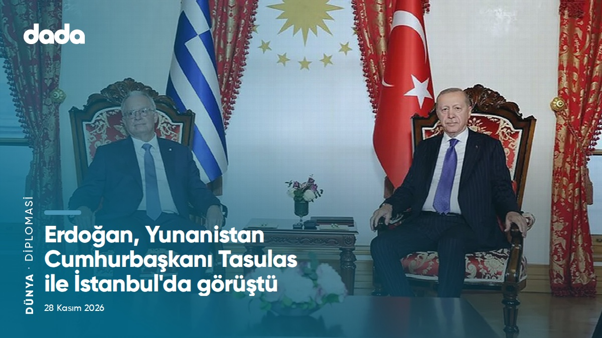
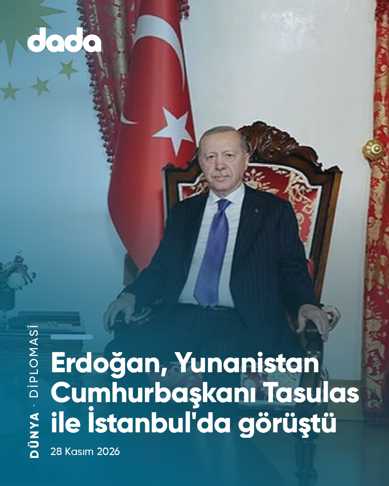
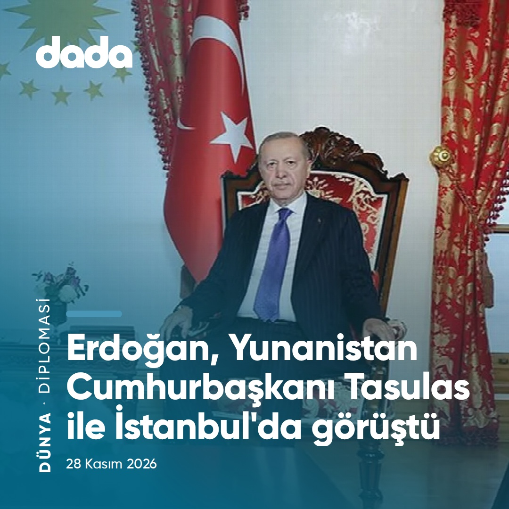
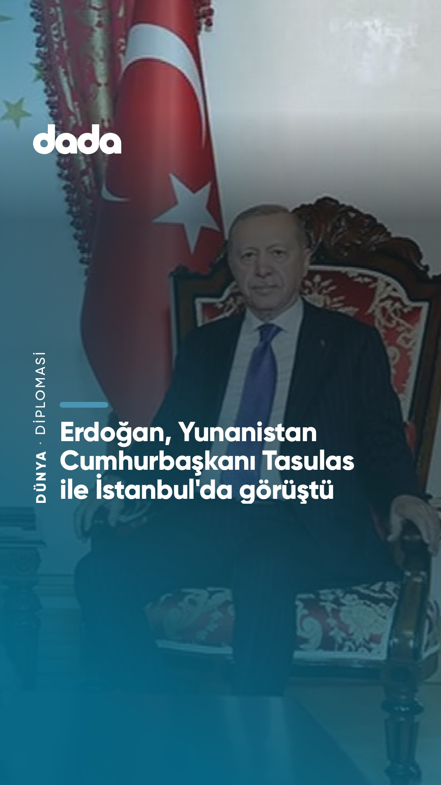
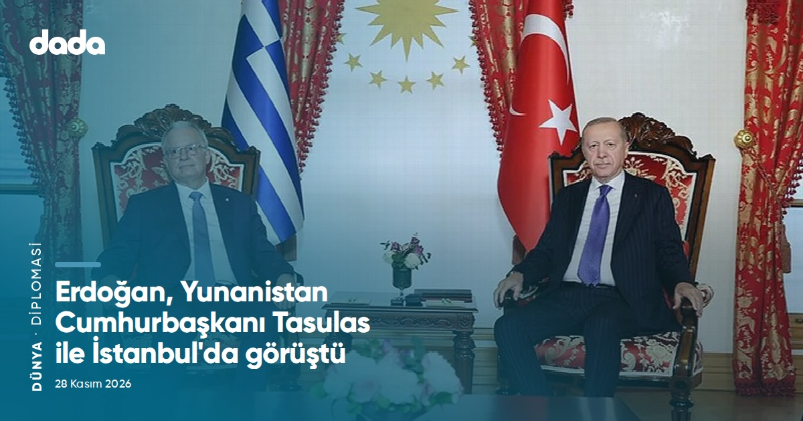
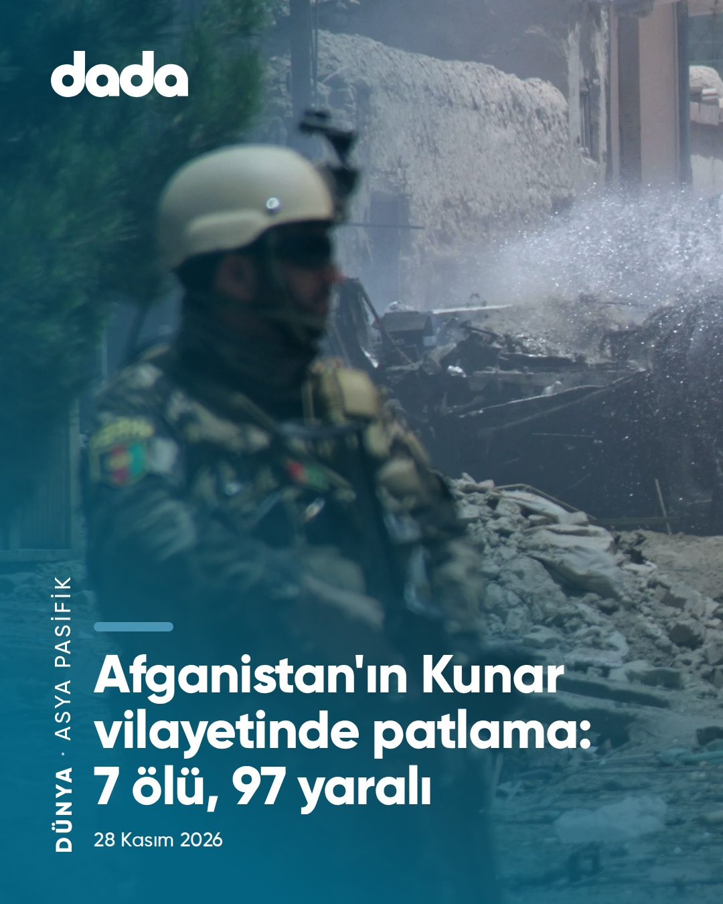
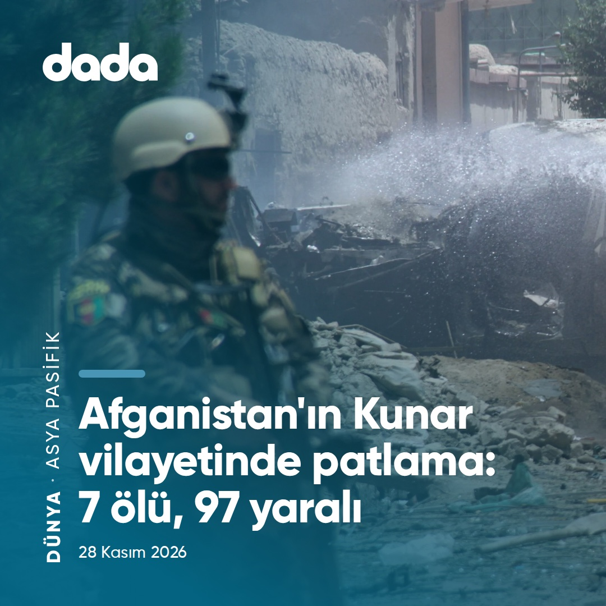
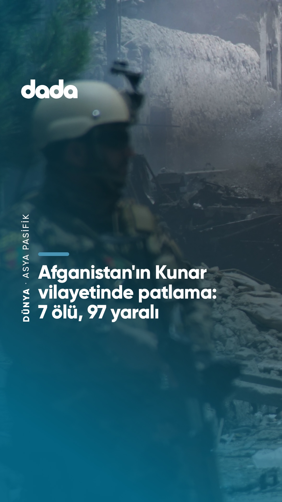
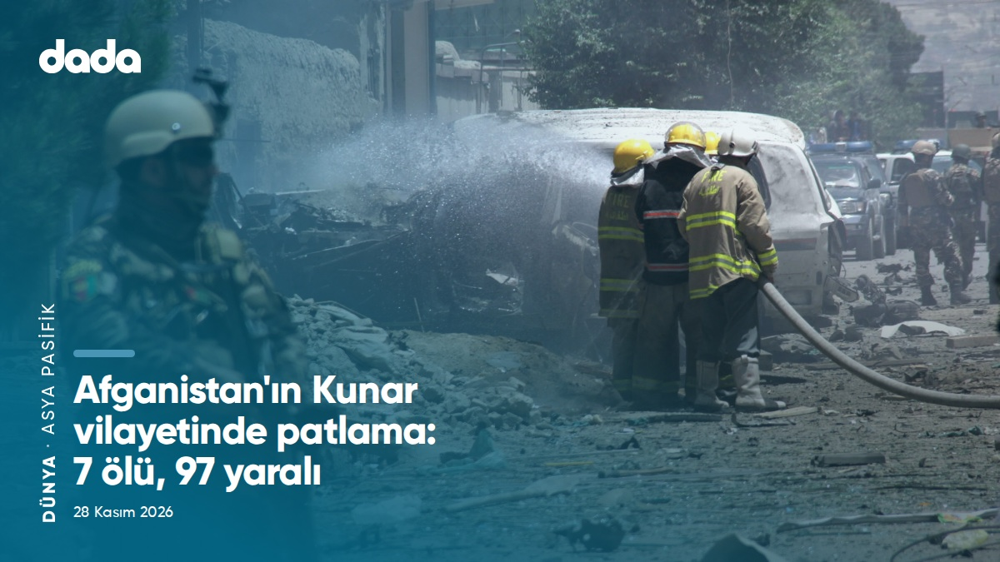
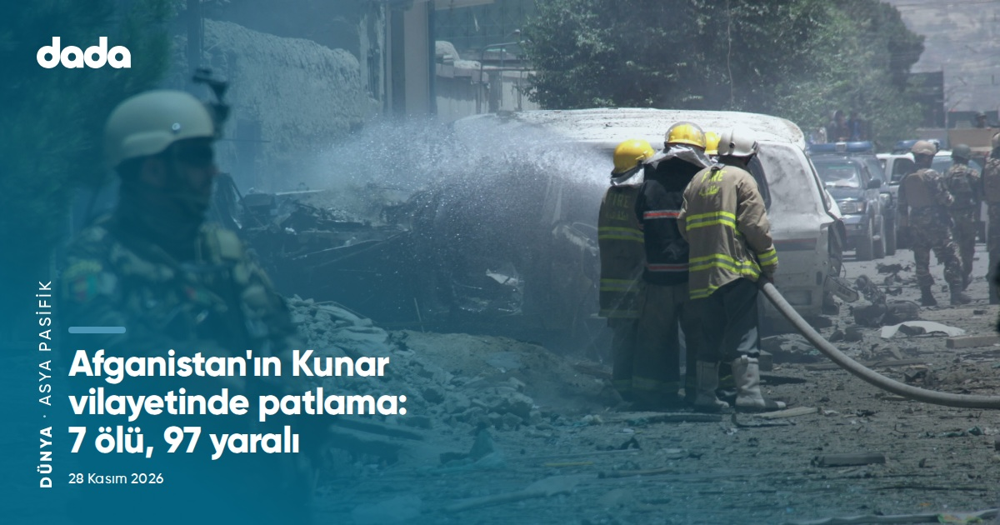

Haber 72 · Haber üretimi ve sosyal medya çıktıları
Bütün görseller ve metinler canlıdaki koddan üretildi (2026-11-28 22:14). Görseller seçilen kalıp A · Vitrin ile çizildi. Dikey ve kare biçimlerde fotoğraf tuvali tamamen doldurur; kırpım otomatik odakla yüze ya da ana konuya ortalanır. Hiçbir biçimde paylaşım bekletilmez.

Erdoğan, Yunanistan Cumhurbaşkanı Tasulas ile İstanbul'da görüştü
Cumhurbaşkanı Erdoğan, İstanbul'a gelen Yunanistan Cumhurbaşkanı Konstantinos Tasulas ile Dolmabahçe'de bir araya geldi. Görüşmede Türkiye-Yunanistan ilişkileri ele alındı.
Aynı oranı kullanan mecralara aynı görsel gider; her oran bir kez gösterildi. Bu haberin görseli AA'nın 1120 px özgününden kırpıldı. Dar biçimlerde (4:5, 9:16) kırpım bölgesi tuvalden küçük olduğu için büyütüldü; editöre yalnız bilgi notu çıkar.

4:5 · Instagram akış · Threads1080×1350 px · kaynak AA özgünü 1120×630 · kırpım 504×630 · 2,143 kat · odak: otomatik
Bilgi: Instagram 4:5 görseli 504×630 px kırpım bölgesinden 2,1 kat büyütülerek 1080×1350 px üretildi; görüntü yumuşak olabilir. Daha büyük bir görsel seçebilir ya da kırpımı genişletebilirsiniz; paylaşım bekletilmez.

1:1 · Instagram kare1080×1080 px · kaynak AA özgünü 1120×630 · kırpım 630×630 · 1,714 kat · odak: otomatik
Büyütme sınırın altında; uyarı yok.

9:16 · Instagram Hikâye ve Reels1080×1920 px · kaynak AA özgünü 1120×630 · kırpım 354×630 · 3,051 kat · odak: otomatik
Bilgi: Dikey 9:16 görseli 354×630 px kırpım bölgesinden 3,1 kat büyütülerek 1080×1920 px üretildi; görüntü yumuşak olabilir. Daha büyük bir görsel seçebilir ya da kırpımı genişletebilirsiniz; paylaşım bekletilmez.
16:9 · X · Telegram1200×675 px · kaynak AA özgünü 1120×630 · kırpım 1120×630 · 1,071 kat · odak: otomatik
Büyütme sınırın altında; uyarı yok.

1,91:1 · Facebook · LinkedIn1200×630 / 1200×627 px · kaynak AA özgünü 1120×630 · kırpım 1120×588 · 1,071 kat · odak: otomatik
Büyütme sınırın altında; uyarı yok.
Görseller · büyük özgünü olan bir AA haberi (haber 69)
AA özgünü 4384 px: hiçbir biçimde büyütme gerekmez, görüntü keskin kalır.

4:5 · Instagram akış · Threads1080×1350 px · kaynak AA özgünü 4384×2466 · kırpım 1973×2466 · 0,547 kat · odak: otomatik
Büyütme sınırın altında; uyarı yok.

1:1 · Instagram kare1080×1080 px · kaynak AA özgünü 4384×2466 · kırpım 2466×2466 · 0,438 kat · odak: otomatik
Büyütme sınırın altında; uyarı yok.

9:16 · Instagram Hikâye ve Reels1080×1920 px · kaynak AA özgünü 4384×2466 · kırpım 1387×2466 · 0,779 kat · odak: otomatik
Büyütme sınırın altında; uyarı yok.

16:9 · X · Telegram1200×675 px · kaynak AA özgünü 4384×2466 · kırpım 4384×2466 · 0,274 kat · odak: otomatik
Büyütme sınırın altında; uyarı yok.

1,91:1 · Facebook · LinkedIn1200×630 / 1200×627 px · kaynak AA özgünü 4384×2466 · kırpım 4384×2302 · 0,274 kat · odak: otomatik
Büyütme sınırın altında; uyarı yok.
Yayındaki 70 haberle ölçüm
560görsel (70 haber × 8 biçim)
0bekletilen paylaşım
46 / 70haberde AA özgünü kullanıldı (24 haberde özgün aynı fotoğraf çıkmadı)
142dikey/kare görselde "2 kattan fazla büyütüldü" bilgi notu (önce 280)
Kırpım sırası: editörün o orandaki elle kırpımı → editörün seçtiği odak noktası → otomatik odak (yapay zekâ, görsel başına bir kez, ~0,0001 $) → üst üçte birin ortası.
Otomatik odak: fotoğraftaki en belirgin kişinin yüzü; kafa kesilmez. Maliyet Raporlar › Sistem Raporu › Kaynak › "AI Maliyeti · Görev Dökümü"nde "Görsel odak bulma" satırında.
En büyük kaynak: AA önizlemesi yerine özgünü; algısal özetle aynı fotoğraf olduğu doğrulanır. Büyütme GD ile bicubic + hafif keskinleştirme.
Değişmeyen kurallar: sitedeki kapak için en az 1080 px; çok düşük çözünürlüklü görsel alınmaz; yatay biçimlerde (X, Facebook, LinkedIn, Telegram) 2 kat sınırı aynen.
Kalıp: sol kenarda dikey etiket (ana bölüm · alt konu), logo, vurgu çizgisi, başlık ve tarih seçilen kalıpla birebir (180 ölçüm, en büyük fark %0,08).
Metinler ve talimatları
Tek yapay zekâ çağrısı, claude-haiku-5-5 · 0,004194 $. Instagram ve Facebook açıklaması en az iki paragraf (450 / 400 karakter); X'te bağlantı ve adres yok.
X
163 karakter · sınır 280
Gönderi metni
Erdoğan, Yunanistan Cumhurbaşkanı Konstantinos Tasulas ile İstanbul'da görüştü. AA'ya göre görüşmede Türkiye-Yunanistan ilişkileri ele alındı. #Yunanistan #Erdoğan
Bu metni üreten talimat (panelden değiştirilebilir)
X gönderisi kısa ve doğrudandır: haberin başlığı ve bir cümlelik açıklaması, o kadar.
- Bağlantı, adres ve alan adı yazma (X'te bağlantı yok; görsel ve metin gider).
- Kurum adını yerleşik resmî kısaltmasıyla yaz (Savunma Sanayii Başkanlığı → SSB, Millî Eğitim Bakanlığı → MEB); uzun ad ve açıklama yok. Yalnız haber metninde ya da doğrulanmış listede verilen kısaltma; kısaltması yoksa kısa adıyla.
- Etiketi ayrı satıra ya da sona dizme; cümlenin içinde kullan: "#Trabzonspor maçı 5-0 bitti". En çok iki etiket.
- Ünlem, tamamı büyük harf ve tık tuzağı yok. Emoji en çok bir tane, ancak konuya gerçekten uyuyorsa.
- @ ile hesap yazma; resmî hesapları sistem doğrulanmış listeden ekler.
Facebook
983 karakter · sınır 2000
Gönderi metni
🤝 Erdoğan, Yunanistan Cumhurbaşkanı Tasulas ile İstanbul'da görüştü
Cumhurbaşkanı Recep Tayyip Erdoğan, Yunanistan Cumhurbaşkanı Konstantinos Tasulas ile İstanbul'da bir araya geldi. Görüşme, Cumhurbaşkanlığı Dolmabahçe Ofisi'nde basına kapalı yapıldı ve yaklaşık 35 dakika sürdü.
Görüşmede Türkiye-Yunanistan ikili ilişkileri ele alındı. Erdoğan, iki ülke arasındaki ilişkilerin her alanda ciddi potansiyeli bulunduğunu ifade etti.
———
Kişiler:
• Recep Tayyip Erdoğan: Cumhurbaşkanı
• Konstantinos Tasulas: Yunanistan Cumhurbaşkanı
• Hakan Fidan: Dışişleri Bakanı
• Burhanettin Duran: Cumhurbaşkanlığı İletişim Başkanı
• Akif Çağatay Kılıç: Cumhurbaşkanı Dış Politika ve Güvenlik Başdanışmanı
Kısaltmalar:
• AA: Anadolu Ajansı
Detaylar ve daha fazlası için: https://dadahaber.com/dunya/erdogan-yunanistan-cumhurbaskani-tasulas-ile-istanbul-da-gorustu-72
#RecepTayyipErdoğan #KonstantinosTasulas #Yunanistan #TürkiyeYunanistanİlişkileri #İstanbul #Dolmabahçe #DoğuAkdeniz #Ege
Bu metni üreten talimat (panelden değiştirilebilir)
Facebook gönderisi haberi anlatır; okur bağlantıya tıklamadan ne olduğunu anlamalı.
- ikon: konuya uygun tek emoji (ör. 🇹🇷 🤝 ⚽ 📈 🏛️ ✈️); emin değilsen 📰.
- facebook_baslik: haberin başlığı, sade; emoji koyma (ikon ayrı).
- facebook_metin: haberin açıklaması, bir ya da iki paragraf; kim, ne, nerede, ne zaman; paragraf arası boş satır.
- Metin içinde kurumun resmî kısaltmasını kullan (haber metninde ya da doğrulanmış listede varsa); açılımı sistem dipnotta yazar.
- Ayırıcı çizgi ve dipnot (kurumlar, kişiler, kısaltmalar), bağlantı ve etiket satırı sistem tarafından eklenir; metne yazma.
- Etiketler en altta, konuyla ilgili olabildiğince kapsayıcı: kişi, kurum, yer ve konu.
LinkedIn
787 karakter · sınır 3000
Gönderi metni
Cumhurbaşkanı Erdoğan, Yunanistan Cumhurbaşkanı Tasulas ile görüştü
Cumhurbaşkanı Recep Tayyip Erdoğan, Yunanistan Cumhurbaşkanı Konstantinos Tasulas ile İstanbul'da görüştü. AA'ya göre görüşmede Türkiye-Yunanistan ikili ilişkileri ele alındı. Görüşme yaklaşık 35 dakika sürdü.
———
Kişiler:
• Recep Tayyip Erdoğan: Cumhurbaşkanı
• Konstantinos Tasulas: Yunanistan Cumhurbaşkanı
• Hakan Fidan: Dışişleri Bakanı
• Burhanettin Duran: Cumhurbaşkanlığı İletişim Başkanı
• Akif Çağatay Kılıç: Cumhurbaşkanı Dış Politika ve Güvenlik Başdanışmanı
Kısaltmalar:
• AA: Anadolu Ajansı
#RecepTayyipErdoğan #KonstantinosTasulas #Yunanistan #TürkiyeYunanistanİlişkileri #İstanbul
Haberin ayrıntıları: https://dadahaber.com/dunya/erdogan-yunanistan-cumhurbaskani-tasulas-ile-istanbul-da-gorustu-72
Bu metni üreten talimat (panelden değiştirilebilir)
LinkedIn gönderisi kurumsal ve bilgilendiricidir; profesyonel bir okur için yazılır.
- linkedin_baslik: kurumsal, bilgilendirici başlık; emoji ve ünlem yok.
- linkedin_metin: iki-üç cümlelik kısa bilgilendirme; ilk 200 karakter haberin özünü verir (LinkedIn "daha fazla"dan önce ~210 karakter gösterir).
- Metin içinde kurumun resmî kısaltmasını kullan (haber metninde ya da doğrulanmış listede varsa); açılımı sistem dipnotta yazar. Resmî kurum sayfasını sistem doğrulanmış listeden anar.
- Haber bağlantısı en altta; bölümler ve etiketler sistem tarafından eklenir.
Instagram
1041 karakter · sınır 2200
Gönderi metni
🤝 Erdoğan, Tasulas ile İstanbul'da görüştü
Cumhurbaşkanı Recep Tayyip Erdoğan, Yunanistan Cumhurbaşkanı Konstantinos Tasulas ile İstanbul'da görüştü. Görüşme, Cumhurbaşkanlığı Dolmabahçe Ofisi'nde basına kapalı yapıldı ve yaklaşık 35 dakika sürdü.
Görüşmede Dışişleri Bakanı Hakan Fidan, Cumhurbaşkanlığı İletişim Başkanı Burhanettin Duran ile Cumhurbaşkanı Dış Politika ve Güvenlik Başdanışmanı Akif Çağatay Kılıç da hazır bulundu. Türkiye-Yunanistan ikili ilişkileri ele alındı.
Tasulas, Fener Rum Patriği 1. Bartholomeos'un daveti üzerine üç günlük ziyaret için İstanbul'a geldi.
———
Kişiler:
• Recep Tayyip Erdoğan: Cumhurbaşkanı
• Konstantinos Tasulas: Yunanistan Cumhurbaşkanı
• Hakan Fidan: Dışişleri Bakanı
• Burhanettin Duran: Cumhurbaşkanlığı İletişim Başkanı
• Akif Çağatay Kılıç: Cumhurbaşkanı Dış Politika ve Güvenlik Başdanışmanı
Kısaltmalar:
• AA: Anadolu Ajansı
Ayrıntılar profildeki bağlantıda.
#RecepTayyipErdoğan #KonstantinosTasulas #Yunanistan #TürkiyeYunanistanİlişkileri #İstanbul #Dolmabahçe #DoğuAkdeniz #Ege
Bu metni üreten talimat (panelden değiştirilebilir)
Instagram alt yazısında bağlantı tıklanmaz; okur haberi alt yazıdan anlamalı.
- instagram_baslik: kısa başlık; emoji koyma (ikon ayrı).
- instagram_metin: haberi ayrıntılı anlatır, iki-üç paragraf (Beyar 28.11: okur bağlantıya gidemediği için ayrıntı alt yazıda olmalı): kim, ne, nerede, ne zaman, nasıl ve neden önemli; haberde geçen sayı, yer ve açıklamaları koru; paragraf arası boş satır. İlk 125 karakter haberin özünü verir ("daha fazla"dan önce görünen kısım). Haber metninde olmayan bilgi ekleme.
- Metin içinde kurumun resmî kısaltmasını kullan (metinde ya da doğrulanmış listede varsa); açılımı sistem dipnotta yazar.
- Bağlantı ve adres yazma; sistem "Ayrıntılar profildeki bağlantıda." satırını ekler.
- Etiketler en altta (Instagram en çok 30 kabul eder; sistem sınırlar).
Telegram
375 karakter · sınır 1024
Gönderi metni
*Erdoğan, Yunanistan Cumhurbaşkanı Tasulas ile İstanbul'da görüştü*
Erdoğan, Yunanistan Cumhurbaşkanı Konstantinos Tasulas ile İstanbul'da görüştü. Görüşmede Türkiye-Yunanistan ikili ilişkileri ele alındı.
[Haberin devamı](https://dadahaber.com/dunya/erdogan-yunanistan-cumhurbaskani-tasulas-ile-istanbul-da-gorustu-72)
#RecepTayyipErdoğan #KonstantinosTasulas #Yunanistan
Bu metni üreten talimat (panelden değiştirilebilir)
Telegram kanal iletisi kısadır: kalın başlık, bir-iki cümlelik özet, tıklanır haber bağlantısı.
- telegram_metin: özet; * _ ~ ` gibi biçim işareti kullanma (başlığın kalınlığını sistem verir).
- Dipnot yok: kısaltma kullanırsan yanında parantez içinde uzun adını yaz ("SSB (Savunma Sanayii Başkanlığı)").
- Bağlantıyı yazma; sistem "Haberin devamı" bağlantısını ekler.